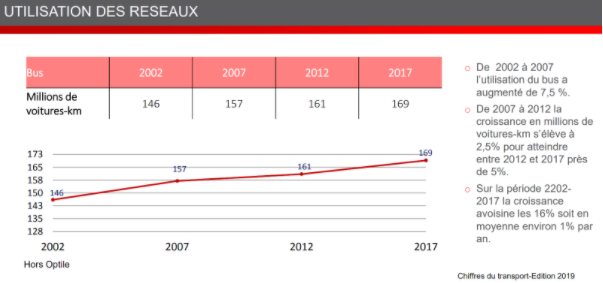

Sur une période de 15 ans, on remarque que la part d’utilisation de bus augmente de 20 millions de voitures-km, soit une augmentation de 16 % soit environ une augmentation annuelle de 1 %.
Durant ces 15 années d’études, on peut observer trois grandes parties :
La forte augmentation sur les 5 premières années. De 2002 à 2007, l’utilisation des bus passe de 146 à 157 soit une augmentation de 7,5 % sur 5 ans soit environ 1,5 % d’augmentation annuellement.
La « pseudo-stagnation » de la croissance en millions de voitures-km entre 2007 et 2012, peut s’expliquer par la crise économique des subprimes qui a affecté de nombreux secteurs d’activités. Cette crise a engendré une augmentation de 2,5 % sur 5 ans soit environ une augmentation de 0,5 % par an.
En dernière partie nous avons une augmentation de cette croissance, soit après la crise économique. L’utilisation des bus a vu sa part augmenter de 5 % en 5 ans soit 1 % durant la période de 12012 à 2017.
